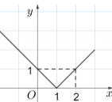

ĐỀ THI TOÁN - ĐỀ SỐ 39 HOT
Phần I: Trắc Nghiệm Nhiều Lựa Chọn
Tóm tắt kiến thức: Cực trị của hàm số
Hàm số có cực trị tại điểm \( x_0 \) nếu \( f'(x_0) = 0 \) hoặc không xác định, và \( f'(x) \) đổi dấu qua \( x_0 \).
Câu 1:
Số cực trị của hàm số \( f(x) = \frac{x - 2026}{2x + 2025} \) là:
Chọn đáp án:
Lời giải:
Đạo hàm: \( f'(x) = \frac{(2x + 2025) \cdot 1 - (x - 2026) \cdot 2}{(2x + 2025)^2} = \frac{6077}{(2x + 2025)^2} \).
Vì \( f'(x) > 0, \forall x \neq -\frac{2025}{2} \), hàm số không có cực trị.
Đáp án: B.
Tóm tắt kiến thức: Tính đơn điệu của hàm số
Hàm số nghịch biến trên khoảng \( (a; b) \) nếu \( f'(x) < 0, \forall x \in (a; b) \).
Câu 2:
Hàm số \( y = f(x) \) liên tục trên \( \mathbb{R} \) và có đạo hàm \( f'(x) = x(x - 1)(x^2 - 1) \). Hàm số \( y = f(x) \) nghịch biến trên khoảng:
Chọn đáp án:
Lời giải:
\( f'(x) = x(x - 1)(x^2 - 1) = x(x - 1)^2(x + 1) = 0 \Rightarrow x = -1, 0, 1 \).
Bảng biến thiên:

| \( x \) | \(-\infty\) | \(-1\) | 0 | 1 | \( +\infty \) |
|---|---|---|---|---|---|
| \( f'(x) \) | + | - | - | 0 | + |
Đáp án: C.
Tóm tắt kiến thức: Tổng vector trong tứ diện
Trong tứ diện, tổng vector thỏa mãn quy tắc trung điểm: \( \overrightarrow{AB} + \overrightarrow{DC} = 2 \overrightarrow{MN} \) nếu \( M, N \) là trung điểm của \( AD \) và \( BC \).
Câu 3:
Cho tứ diện \( ABCD \). Gọi \( M, N \) lần lượt là trung điểm của \( AD \) và \( BC \). Tổng \( \overrightarrow{AB} + \overrightarrow{DC} \) bằng:
Chọn đáp án:
Lời giải:
\( \overrightarrow{AB} + \overrightarrow{DC} = (\overrightarrow{AM} + \overrightarrow{MN} + \overrightarrow{NB}) + (\overrightarrow{DM} + \overrightarrow{MN} + \overrightarrow{NC}) \).
Vì \( M \) là trung điểm của \( AD \): \( \overrightarrow{AM} + \overrightarrow{DM} = \overrightarrow{0} \).
Vì \( N \) là trung điểm của \( BC \): \( \overrightarrow{NB} + \overrightarrow{NC} = \overrightarrow{0} \).
Do đó: \( \overrightarrow{AB} + \overrightarrow{DC} = 2 \overrightarrow{MN} \).
Đáp án: D.
Tóm tắt kiến thức: Phương trình đường thẳng trong không gian
Đường thẳng giao tuyến của hai mặt phẳng có vector chỉ phương là tích có hướng của hai vector pháp tuyến, đi qua điểm thuộc cả hai mặt phẳng.
Câu 4:
Trong không gian với hệ tọa độ \( Oxyz \), gọi \( \Delta \) là giao tuyến của hai mặt phẳng \( (P): x - y + z + 3 = 0 \) và \( (Q): 2x + 3y - z - 3 = 0 \). Phương trình đường thẳng \( \Delta \) có dạng:
Chọn đáp án:
Lời giải:
Vector pháp tuyến: \( \vec{n}_P = (1; -1; 1) \), \( \vec{n}_Q = (2; 3; -1) \).
Vector chỉ phương của \( \Delta \): \( \vec{u}_\Delta = \vec{n}_P \times \vec{n}_Q = (-2; 3; 5) \).
Điểm \( M \in \Delta \): Giải hệ \( \begin{cases} x - y + z + 3 = 0 \\ 2x + 3y - z - 3 = 0 \end{cases} \), cho \( x = 0 \Rightarrow y = 0, z = -3 \Rightarrow M(0; 0; -3) \).
Phương trình: \( \frac{x}{-2} = \frac{y}{3} = \frac{z + 3}{5} \).
Đáp án: B.
Tóm tắt kiến thức: Độ lệch chuẩn của mẫu số liệu ghép nhóm
Độ lệch chuẩn: \( S = \sqrt{\frac{1}{n} \sum f_i x_i^2 - \bar{x}^2} \), với \( \bar{x} = \frac{\sum f_i x_i}{n} \), \( x_i \) là giá trị đại diện, \( f_i \) là tần số.
Câu 5:
Một bác tài xế thống kê độ dài quãng đường (km) lái xe mỗi ngày trong một tháng:
| Độ dài quãng đường (km) | \([50; 100)\) | \([100; 150)\) | \([150; 200)\) | \([200; 250)\) | \([250; 300)\) |
|---|---|---|---|---|---|
| Số ngày | 5 | 10 | 9 | 4 | 2 |
Chọn đáp án:
Lời giải:
Giá trị đại diện: \( 75, 125, 175, 225, 275 \).
Tổng số ngày: \( n = 5 + 10 + 9 + 4 + 2 = 30 \).
Trung bình: \( \bar{x} = \frac{75 \cdot 5 + 125 \cdot 10 + 175 \cdot 9 + 225 \cdot 4 + 275 \cdot 2}{30} = 155 \).
Phương sai: \( S^2 = \frac{1}{30} (75^2 \cdot 5 + 125^2 \cdot 10 + 175^2 \cdot 9 + 225^2 \cdot 4 + 275^2 \cdot 2) - 155^2 = 3100 \).
Độ lệch chuẩn: \( S = \sqrt{3100} \approx 55,68 \).
Đáp án: A.
Tóm tắt kiến thức: Nguyên hàm
Nguyên hàm của \( f(x) = x + 3 \) là \( F(x) = \int (x + 3) \, dx = \frac{1}{2} x^2 + 3x + C \).
Câu 6:
Hàm số nào sau đây không là một nguyên hàm của hàm số \( f(x) = x + 3 \)?
Chọn đáp án:
Lời giải:
Nguyên hàm: \( F(x) = \int (x + 3) \, dx = \frac{1}{2} x^2 + 3x + C \).
Kiểm tra:
A. \( F'(x) = x + 3 \), đúng.
B. \( F(x) = \frac{1}{2} (x^2 + 6x + 9) \), \( F'(x) = x + 3 \), đúng.
C. \( F'(x) = x + 3 \), đúng.
D. \( F'(x) = 2x + 3 \neq x + 3 \), sai.
Đáp án: D.
Tóm tắt kiến thức: Tích phân và diện tích hình học
Tích phân \( \int_a^b f(x) \, dx \) biểu thị tổng diện tích các hình học giới hạn bởi đồ thị \( y = f(x) \), trục hoành, và các đường \( x = a \), \( x = b \).
Câu 7:
Đường gấp khúc trong hình vẽ là đồ thị hàm số \( y = f(x) \) trên đoạn \( [-2; 3] \).

Tích phân \( \int_{-2}^3 f(x) \, dx \) bằng:
Chọn đáp án:
Lời giải:
Tích phân \( \int_{-2}^3 f(x) \, dx \) là tổng diện tích tam giác \( AKB \) và \( BCL \).
\( S_{AKB} = \frac{1}{2} \cdot 3 \cdot 3 = \frac{9}{2} \).
\( S_{BCL} = \frac{1}{2} \cdot 2 \cdot 2 = 2 \).
Tổng: \( \frac{9}{2} + 2 = \frac{13}{2} \).
Đáp án: A.
Tóm tắt kiến thức: Xác suất
Xác suất hai sự kiện độc lập: \( P(AB) = P(A) \cdot P(B) \). Xác suất tổng: \( P(A \cup B) = P(A) + P(B) \) nếu \( A, B \) xung khắc.
Câu 8:
Có hai hộp chứa các quả cầu. Hộp thứ nhất chứa 3 quả cầu trắng và 7 quả cầu đỏ. Hộp thứ hai chứa 10 quả cầu trắng và 6 quả cầu đỏ. Từ mỗi hộp lấy ngẫu nhiên ra một quả cầu. Xác suất để hai quả lấy ra có màu giống nhau bằng:
Chọn đáp án:
Lời giải:
Gọi \( A \): quả từ hộp 1 trắng, \( B \): quả từ hộp 2 trắng.
\( P(A) = \frac{3}{10} \), \( P(B) = \frac{10}{16} = \frac{5}{8} \).
Xác suất cả hai trắng: \( P(AB) = \frac{3}{10} \cdot \frac{5}{8} = \frac{3}{16} \).
Xác suất cả hai đỏ: \( P(\bar{A}) \cdot P(\bar{B}) = \frac{7}{10} \cdot \frac{6}{16} = \frac{21}{80} \).
Tổng: \( \frac{3}{16} + \frac{21}{80} = \frac{9}{20} \).
Đáp án: B.
Tóm tắt kiến thức: Nghiệm của phương trình lượng giác
Phương trình \( \cos x = 0 \): \( x = \frac{\pi}{2} + k\pi, k \in \mathbb{Z} \).
Câu 9:
Phương trình \( \cos x = 0 \) có nghiệm là:
Chọn đáp án:
Lời giải:
\( \cos x = 0 \Leftrightarrow x = \frac{\pi}{2} + k\pi, k \in \mathbb{Z} \).
Đáp án: A.
Tóm tắt kiến thức: Cấp số nhân
Công bội \( q \) của cấp số nhân: \( \frac{u_n}{u_1} = q^{n-1} \).
Câu 10:
Cho cấp số nhân \( (u_n) \) có \( u_1 = 2 \) và \( u_4 = 54 \). Giá trị của công bội \( q \) bằng:
Chọn đáp án:
Lời giải:
\( u_4 = u_1 \cdot q^3 \Rightarrow 54 = 2 \cdot q^3 \Rightarrow q^3 = 27 \Rightarrow q = 3 \).
Đáp án: A.
Tóm tắt kiến thức: Bất phương trình lũy thừa
Bất phương trình \( a^{f(x)} < a^{g(x)} \) (với \( a > 1 \)) tương đương với \( f(x) < g(x) \).
Câu 11:
Tập nghiệm của bất phương trình \( 2^{2x} < 2^{x + 6} \) là:
Chọn đáp án:
Lời giải:
\( 2^{2x} < 2^{x + 6} \Leftrightarrow 2x < x + 6 \Leftrightarrow x < 6 \).
Tập nghiệm: \( (-\infty; 6) \).
Đáp án: B.
Tóm tắt kiến thức: Phương trình tiếp tuyến
Phương trình tiếp tuyến tại điểm \( (x_0; y_0) \): \( y - y_0 = f'(x_0)(x - x_0) \).
Câu 12:
Tiếp tuyến của đồ thị hàm số \( y = x^3 - 3x^2 - 2 \) có hệ số góc \( k = -3 \) có phương trình là:
Chọn đáp án:
Lời giải:
Đạo hàm: \( y' = 3x^2 - 6x \).
Hệ số góc \( y' = -3 \): \( 3x^2 - 6x = -3 \Rightarrow x^2 - 2x + 1 = 0 \Rightarrow x = 1 \).
Tại \( x = 1 \): \( y = 1^3 - 3 \cdot 1^2 - 2 = -4 \).
Phương trình tiếp tuyến: \( y - (-4) = -3 (x - 1) \Rightarrow y = -3x - 1 \).
Đáp án: D.
Phần II: Trắc Nghiệm Đúng/Sai
Tóm tắt kiến thức: Hàm số lôgarit và cực trị
Tập xác định của \( \ln u \): \( u > 0 \). Đạo hàm: \( (\ln u)' = \frac{u'}{u} \). Cực trị tìm bằng cách giải \( f'(x) = 0 \).
Câu 13:
Cho hàm số \( f(x) = \ln (x^2 - 2x + 1) - x \). Xét các phát biểu sau:
Chọn đáp án cho từng phát biểu:
a)
b)
c)
d)
Lời giải:
a) Sai: \( x^2 - 2x + 1 = (x - 1)^2 > 0 \Leftrightarrow x \neq 1 \). Tập xác định: \( \mathbb{R} \setminus \{1\} \).
b) Đúng: \( f'(x) = \frac{(x^2 - 2x + 1)'}{x^2 - 2x + 1} - 1 = \frac{2x - 2}{(x - 1)^2} - 1 = \frac{2}{x - 1} - 1 \).
c) Đúng: \( f'(x) = 0 \Leftrightarrow \frac{2}{x - 1} - 1 = 0 \Leftrightarrow x = 3 \). Nghiệm duy nhất trên \( (1; +\infty) \).
d) Sai: Tại \( x = 3 \), \( f(3) = \ln 4 - 3 = 2 \ln 2 - 3 \). So với \( a \ln 2 + b \), \( a = 2 \), \( b = -3 \Rightarrow a + b = -1 \neq 1 \).
Đáp án: a) Sai, b) Đúng, c) Đúng, d) Sai.
Tóm tắt kiến thức: Tọa độ và mặt phẳng trong hình lập phương
Trong hình lập phương, tọa độ các đỉnh được xác định dựa trên cạnh và gốc tọa độ. Phương trình mặt phẳng và khoảng cách tính bằng công thức hình học.
Câu 14:
Trong không gian \( Oxyz \), cho hình lập phương \( ABCD.A'B'C'D' \) có cạnh bằng 4, đỉnh \( A \) trùng với gốc \( O \), các điểm \( B, D, A' \) lần lượt nằm trên các tia \( Ox, Oy, Oz \). Xét các phát biểu sau:
Chọn đáp án cho từng phát biểu:
a)
b)
c)
d)
Lời giải:
Tọa độ: \( A(0; 0; 0) \), \( B(4; 0; 0) \), \( D(0; 4; 0) \), \( A'(0; 0; 4) \), \( C(4; 4; 0) \), \( C'(4; 4; 4) \).
a) Sai: \( \overrightarrow{AB} = (4; 0; 0) \), \( \overrightarrow{AC'} = (4; 4; 4) \), \( \overrightarrow{AD} = (0; 4; 0) \). Tổng: \( (0; 0; 0) \neq \overrightarrow{AA'} = (0; 0; 4) \).
b) Sai: \( C(4; 4; 0) \neq (4; 0; 4) \).
c) Đúng: Mặt phẳng \( (A'BD) \) qua \( A'(0; 0; 4) \), \( B(4; 0; 0) \), \( D(0; 4; 0) \): \( \frac{x}{4} + \frac{y}{4} + \frac{z}{4} = 1 \Rightarrow x + y + z = 4 \).
d) Đúng: Mặt phẳng \( (ABB'A') \): \( y = 0 \). \( M(a; 0; c) \). Trọng tâm \( G \) của \( \triangle C'BD \): \( G\left(\frac{8}{3}; \frac{8}{3}; \frac{4}{3}\right) \).
\( |\overrightarrow{MC'} + \overrightarrow{MB} + \overrightarrow{MD}| = 3 MG \), nhỏ nhất khi \( M = G \left(\frac{8}{3}; 0; \frac{4}{3}\right) \). Tổng: \( a + b + c = \frac{8}{3} + 0 + \frac{4}{3} = 4 \).
Đáp án: a) Sai, b) Sai, c) Đúng, d) Đúng.
Tóm tắt kiến thức: Tích phân và nguyên hàm
Nguyên hàm của hàm phân đoạn cần đảm bảo tính liên tục tại điểm nối. Diện tích hình phẳng được tính bằng tích phân từng đoạn.
Câu 15:
Cho hàm số \( f(x) = \begin{cases} 2x^3 & \text{khi } x \leq 1 \\ x^2 - 5x + 6 & \text{khi } x > 1 \end{cases} \) có đồ thị \( (C) \). Giả sử \( F(x) \) là nguyên hàm của \( f(x) \) trên \( \mathbb{R} \) thỏa mãn \( F(0) = 1 \). Xét các phát biểu sau:
Chọn đáp án cho từng phát biểu:
a)
b)
c)
d)
Lời giải:
a) Đúng: \( F'(0) = f(0) = 2 \cdot 0^3 = 0 \).
b) Sai: \( \int_{-1}^1 f(x) \, dx = \int_{-1}^1 2x^3 \, dx = \left[ \frac{x^4}{2} \right]_{-1}^1 = \frac{1}{2} - \frac{1}{2} = 0 \neq \frac{1}{2} \).
c) Đúng: Diện tích: \( S = \int_0^1 2x^3 \, dx + \int_1^2 (x^2 - 5x + 6) \, dx + \int_2^3 (-x^2 + 5x - 6) \, dx = \frac{1}{2} + \frac{5}{6} + \frac{1}{6} = \frac{3}{2} \).
d) Sai: Nguyên hàm: \( F(x) = \begin{cases} \frac{x^4}{2} + C_1 & \text{khi } x \leq 1 \\ \frac{x^3}{3} - \frac{5x^2}{2} + 6x + C_2 & \text{khi } x > 1 \end{cases} \).
\( F(0) = 1 \Rightarrow C_1 = 1 \). Liên tục tại \( x = 1 \): \( \frac{1}{3} - \frac{5}{2} + 6 + C_2 = \frac{1}{2} + 1 \Rightarrow C_2 = -\frac{7}{3} \).
\( F(2) = \frac{8}{3} - 10 + 12 - \frac{7}{3} = \frac{7}{3} \), \( F(3) = 9 - \frac{45}{2} + 18 - \frac{7}{3} = \frac{13}{6} \).
\( 3F(2) + 2F(3) = 3 \cdot \frac{7}{3} + 2 \cdot \frac{13}{6} = 7 + \frac{13}{3} = \frac{34}{3} \neq 28 \).
Đáp án: a) Đúng, b) Sai, c) Đúng, d) Sai.
Tóm tắt kiến thức: Hình chóp và khoảng cách
Đường cao của hình chóp là đoạn vuông góc từ đỉnh đến mặt đáy. Khoảng cách từ điểm đến mặt phẳng tính bằng công thức hình học.
Câu 16:
Cho hình chóp \( S.ABCD \) có đáy là hình chữ nhật, \( AB = 2a \), \( BC = a \). Tam giác \( SAB \) là tam giác đều và nằm trong mặt phẳng vuông góc với đáy. Xét các phát biểu sau:
Chọn đáp án cho từng phát biểu:
a)
b)
c)
d)
Lời giải:
a) Đúng: \( SAB \) đều, \( H \) là trung điểm \( AB \), \( SH \perp AB \). Vì \( (SAB) \perp (ABCD) \), nên \( SH \perp (ABCD) \).
b) Sai: \( SH = AB \cdot \frac{\sqrt{3}}{2} = a \sqrt{3} \). Diện tích đáy \( S_{ABC} = \frac{1}{2} \cdot AB \cdot BC = a^2 \).
Thể tích: \( V = \frac{1}{3} \cdot a \sqrt{3} \cdot a^2 = \frac{a^3 \sqrt{3}}{3} \neq \frac{2 a^3 \sqrt{3}}{3} \).
c) Sai: \( d(A, (SBD)) = 2 \cdot d(H, (SBD)) \). Từ \( H \), kẻ \( HM \perp BD \), \( \triangle BMH \sim \triangle BAD \), suy ra \( MH = \frac{a \sqrt{5}}{5} \).
\( HK \perp SM \), \( HK = \frac{MH \cdot HS}{\sqrt{MH^2 + HS^2}} = \frac{\sqrt{3} a}{4} \). Do đó, \( d(A, (SBD)) = 2 \cdot \frac{\sqrt{3} a}{4} = \frac{a \sqrt{3}}{2} \neq \frac{a \sqrt{3}}{4} \).
d) Đúng: \( \cos (SC, BD) = \frac{|\overrightarrow{SC} \cdot \overrightarrow{BD}|}{|\overrightarrow{SC}| |\overrightarrow{BD}|} \). Tính: \( \overrightarrow{SC} \cdot \overrightarrow{BD} = -a^2 \), \( |\overrightarrow{SC}| = |\overrightarrow{BD}| = a \sqrt{5} \).
\( \cos (SC, BD) = \frac{a^2}{a \sqrt{5} \cdot a \sqrt{5}} = \frac{1}{5} \).
Đáp án: a) Đúng, b) Sai, c) Sai, d) Đúng.
Phần III: Trắc Nghiệm Trả Lời Ngắn
Tóm tắt kiến thức: Tiếp tuyến và khoảng cách
Khoảng cách ngắn nhất từ điểm đến đường thẳng đạt khi đoạn nối vuông góc với đường thẳng. Góc giữa các đường được tính qua tang hoặc cosin.
Câu 17:
Hình vẽ mô tả một con thuyền kéo một người đàn ông trượt ván bằng dây dài 9 mét. Trên hệ tọa độ \( Oxy \) (đơn vị: mét), con thuyền ở gốc tọa độ, di chuyển trên tia \( Oy \), người đàn ông xuất phát từ điểm \( (9; 0) \), quỹ đạo là đường cong \( y = f(x) \). Bờ biển là đường thẳng \( x + 2y + 1 = 0 \). Khi người đàn ông gần bờ biển nhất, khoảng cách giữa người đàn ông và trục \( Oy \) bằng bao nhiêu mét? (Làm tròn đến hàng phần trăm).

Nhập đáp án:
Lời giải:
Khoảng cách ngắn nhất từ người đàn ông đến bờ \( d: x + 2y + 1 = 0 \) khi tiếp tuyến tại \( M_0 \) song song với \( d \).
Góc \( \angle PM_0Q = \angle FED \). Với \( E(-1; 0) \), \( D(0; -\frac{1}{2}) \), \( \tan \angle FED = \frac{OD}{OE} = \frac{1/2}{1} = \frac{1}{2} \Rightarrow \angle FED \approx 26,565^\circ \).
Trong \( \triangle PM_0Q \): \( QM_0 = PM_0 \cdot \cos \angle PM_0Q = 9 \cdot \cos 26,565^\circ \approx 8,05 \, \text{m} \).
Đáp án: 8,05.
Tóm tắt kiến thức: Tối ưu hóa chi phí
Tối ưu chi phí bằng cách tìm giá trị nhỏ nhất của hàm mục tiêu trên miền nghiệm của hệ bất phương trình.
Câu 18:
Chế độ ăn uống sử dụng thực phẩm chức năng \( A \) (36 đơn vị canxi, 12 đơn vị sắt, 400 nghìn đồng/gói) và \( B \) (9 đơn vị canxi, 60 đơn vị sắt, 300 nghìn đồng/gói). Cần ít nhất 207 đơn vị canxi và 468 đơn vị sắt. Chi phí nhỏ nhất bác Hùng bỏ ra là bao nhiêu triệu đồng (giảm 10% nếu từ 3 triệu đồng trở lên)?
Nhập đáp án:
Lời giải:
Gọi \( x, y \) là số gói \( A, B \). Hệ bất phương trình: \( \begin{cases} 36x + 9y \geq 207 \\ 12x + 60y \geq 468 \\ x \geq 0, y \geq 0 \end{cases} \).
Miền nghiệm có các đỉnh: \( M(0; 23) \), \( N(4; 7) \), \( P(39; 0) \).
Chi phí: \( F(x, y) = 0,4x + 0,3y \).
\( F(0; 23) = 6,9 \), \( F(4; 7) = 3,7 \), \( F(39; 0) = 15,6 \).
Chi phí nhỏ nhất: 3,7 triệu đồng. Giảm 10%: \( 3,7 \cdot 0,9 = 3,33 \, \text{triệu đồng} \).
Đáp án: 3,33.
Tóm tắt kiến thức: Diện tích hình thang cân
Diện tích hình thang cân: \( S = \frac{1}{2} (a + b) h \). Tối ưu diện tích bằng cách tìm cực trị của hàm diện tích.
Câu 19:
Bác nông dân có ba tấm lưới thép B40, mỗi tấm dài \( a = \sqrt{\frac{500}{\sqrt{3}}} \, \text{m} \), muốn rào mảnh vườn hình thang cân \( ABCD \) dọc bờ sông (\( CD \) là bờ sông, không rào). Diện tích lớn nhất của mảnh vườn là bao nhiêu mét vuông?

Nhập đáp án:
Lời giải:
Gọi \( DE = FC = x \), \( EF = AB = a \), \( DC = 2x + a \).
Chiều cao: \( AE = \sqrt{a^2 - x^2} \).
Diện tích: \( S(x) = (a + x) \sqrt{a^2 - x^2} \), \( x \in (0; a) \).
\( S'(x) = \frac{-2x^2 - ax + a^2}{\sqrt{a^2 - x^2}} = 0 \Rightarrow x = \frac{a}{2} \).
Tại \( x = \frac{a}{2} \), \( S = \frac{3a^2 \sqrt{3}}{4} \).
Với \( a = \sqrt{\frac{500}{\sqrt{3}}} \), \( S = \frac{3 \cdot \frac{500}{\sqrt{3}} \cdot \sqrt{3}}{4} = 375 \, \text{m}^2 \).
Đáp án: 375.
Tóm tắt kiến thức: Khoảng cách từ điểm đến mặt phẳng
Khoảng cách từ điểm \( A \) đến mặt phẳng \( (P) \): \( d(A, (P)) = FA \cdot \sin \varphi \), với \( \varphi \) là góc giữa đường thẳng và mặt phẳng.
Câu 20:
Mặt chiếc bàn gấp gọn có hệ tọa độ \( Oxyz \). Điểm \( A \) là chân bàn tiếp xúc mặt đất thuộc đường thẳng \( a: \begin{cases} x = -3 + t \\ y = 1 + t \\ z = -2 + 4t \end{cases} \), cắt mặt bàn \( (P): x + y - 2z + 6 = 0 \) tại \( F \). Độ dài chân bàn \( FA = 40 \sqrt{3} \, \text{cm} \). Độ cao của mặt bàn tính từ mặt đất là bao nhiêu cm?

Nhập đáp án:
Lời giải:
Vector chỉ phương của \( a \): \( \vec{u} = (1; 1; 4) \).
Vector pháp tuyến của \( (P) \): \( \vec{n} = (1; 1; -2) \).
\( \sin (a, (P)) = \left| \cos (\vec{u}, \vec{n}) \right| = \left| \frac{\vec{u} \cdot \vec{n}}{|\vec{u}| |\vec{n}|} \right| = \sqrt{\frac{1}{3}} \).
Độ cao: \( d(A, (P)) = FA \cdot \sin \varphi = 40 \sqrt{3} \cdot \sqrt{\frac{1}{3}} = 40 \, \text{cm} \).
Đáp án: 40.
Tóm tắt kiến thức: Thể tích khối tròn xoay
Thể tích khối tròn xoay: \( V = \pi \int_a^b [f(x)]^2 \, dx \). Tối ưu thể tích bằng cách tìm cực trị của hàm \( V \).
Câu 21:
Cho tam giác vuông \( OAB \), \( OA = a \) trên trục \( Ox \), \( OB = 6 \). Gọi \( \mathfrak{I} \) là khối tròn xoay sinh ra khi quay tam giác \( OAB \) quanh trục \( Ox \). Thể tích lớn nhất của khối tròn xoay \( \mathfrak{I} \) là \( V = b \sqrt{3} \pi \). Giá trị của \( b \) là bao nhiêu?

Nhập đáp án:
Lời giải:
\( AB = \sqrt{OB^2 - OA^2} = \sqrt{36 - a^2} \). Phương trình đường \( OB \): \( y = \frac{\sqrt{36 - a^2}}{a} x \).
Thể tích: \( V = \pi \int_0^a \left( \frac{\sqrt{36 - a^2}}{a} x \right)^2 \, dx = \frac{\pi (36 - a^2) a}{3} \).
Xét \( V(a) = \frac{\pi}{3} (36a - a^3) \), \( a \in (0; 6) \).
\( V'(a) = \frac{\pi}{3} (36 - 3a^2) = 0 \Rightarrow a = 2 \sqrt{3} \).
Tại \( a = 2 \sqrt{3} \), \( V = 16 \sqrt{3} \pi \Rightarrow b = 16 \).
Đáp án: 16.
Tóm tắt kiến thức: Xác suất Bayes
Xác suất có điều kiện: \( P(A|B) = \frac{P(A) P(B|A)}{P(B)} \), với \( P(B) = \sum P(A_i) P(B|A_i) \).
Câu 22:
Có hai hộp bóng bàn. Hộp 1: 3 bóng trắng, 2 bóng vàng. Hộp 2: 8 bóng trắng, 6 bóng vàng. Lần 1: Lấy ngẫu nhiên 4 bóng từ hộp 1. Lần 2: Lấy 1 bóng từ hộp 2, được bóng vàng. Xác suất ở lần 1 lấy được số bóng trắng và vàng bằng nhau là bao nhiêu? (Làm tròn đến hàng phần trăm).
Nhập đáp án:
Lời giải:
Gọi \( A \): lần 2 lấy bóng vàng từ hộp 2.
\( B \): lần 1 lấy 1 vàng, 3 trắng. \( \bar{B} \): lần 1 lấy 2 vàng, 2 trắng.
\( P(B) = \frac{C_2^1 \cdot C_3^3}{C_5^4} = \frac{2}{5} \), \( P(\bar{B}) = \frac{C_2^2 \cdot C_3^2}{C_5^4} = \frac{3}{5} \).
\( P(A|B) = \frac{7}{18} \), \( P(A|\bar{B}) = \frac{8}{18} \).
\( P(A) = \frac{2}{5} \cdot \frac{7}{18} + \frac{3}{5} \cdot \frac{8}{18} = \frac{19}{45} \).
\( P(\bar{B}|A) = \frac{P(\bar{B}) \cdot P(A|\bar{B})}{P(A)} = \frac{\frac{3}{5} \cdot \frac{8}{18}}{\frac{19}{45}} = \frac{8}{19} \approx 0,63 \).
Đáp án: 0,63.